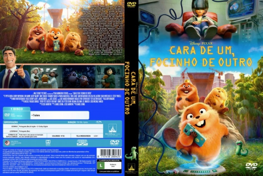
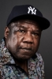

![link to Cara de Um, Focinho de Outro [Autorado] on Rotten Tomatoes](../img/tomatoes.png)
![link to Cara de Um, Focinho de Outro [Autorado] on TheMovieDb](../img/themoviedb.png)

Outro Título:Hoppers
País:United States, 104 minutos
Idiomas falados:Inglês, Português
Gênero(s):Aventura, Animação, Comédia, Família, Sci-Fi
Diretor(s):Daniel Chong
Escritor(es):Jesse Andrews
Codec:MPEG-2 (DVD)
Número: 5936

Certificado:10
Sinopse:
Mabel é uma jovem amante da natureza que tenta impedir o prefeito Jerry de construir uma rodovia que destruirá suas florestas locais. Graças a um experimento secreto de troca de cérebros, Mabel consegue transferir sua mente para um castor robô e segue para um lago, onde refugiados da industrialização invasora desembarcaram. Lá, ela tenta convencer os animais, liderados pelo castor majestoso Rei George, a se juntarem a ela e impedirem a construção da rodovia.
Elenco: 


Tipo de mídia: DVD5,
Legendas: Português, Sem Legendas
Alugado: Não
Tela: Anamorphic Widescreen